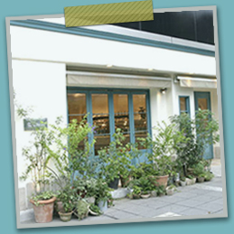

Qu'il fait bonについて
Qu'il fait bonでは、春、夏、秋、冬、それぞれの季節に収穫される旬のフルーツを使ってタルトを作っています。どの季節のフルーツもそれぞれに魅力的で、収穫されたフルーツを見ると「これをケーキにしたらどんなに美味しいのだろう！」と想像をするだけでワクワクしてしまいます。
そんなワクワクを実際にタルトに仕立て、今の季節にしか味わえないタルトを皆様にご提供いたします。
この店で、お天気のいい日に伸びをするみたいな気持ちの良い時間を過ごしてほしいから。従来のケーキ屋さんのスタイルでは味わえない、ケーキを選ぶ楽しさを、
“キルフェ スタイル”を通して、お客様にも感じていただくことができると思います。
新作のメニューはNewsでお知らせします。
店主は10年間イタリアのカフェ・バールで給仕したバリスタ。エスプレッソコーヒーを中心に、地元産の果物を使ったジュースからハーブティーまで、さまざまなバリエーションの飲み物をご用意しております。
皆様のお越しを心よりお待ちしております。
店舗情報
| 住所 | 〒199-9999 或留県九寺楽市九寺楽町3-30-8（地図） |
|---|---|
| 電話番号 | 09-9280-2611 |
| 営業時間 | 10:00～22:00 |
| 定休日 | 水曜日・日曜日 |
| ご予約 | 席のご予約を承っております。 貸し切りパーティは15名様から承っております。詳しくはお電話、もしくはお問い合わせをご利用ください。 |